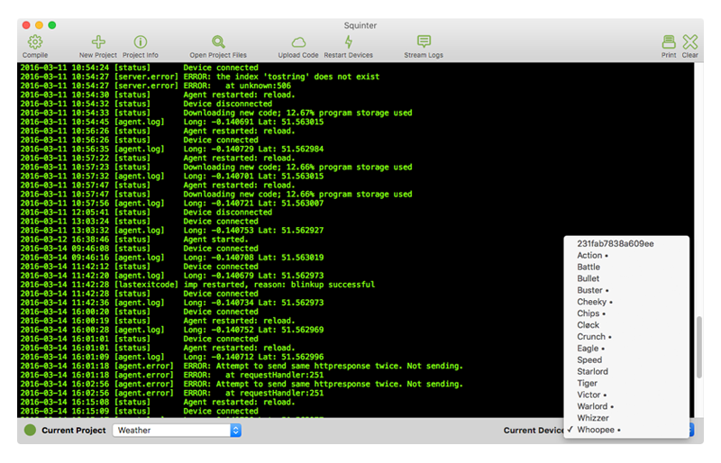
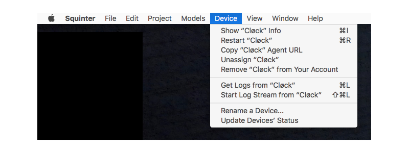

|
Working With DevicesSquinter also keeps track of your development devices. It lists these in the ‘Models’ menu’s ‘Current Models’ submenu, alongside the models they are assigned to. Unassigned devices are listed in their own section. Specific devices can also be selected from the ‘Current Device’ popup menu in Squinter’s main window.  In each of these lists, devices that are currently online have a bullet point after their name. The ‘Device’ menu presents actions you can perform on the currently selected device, including getting information about it, renaming it, removing it from your account and removing its association with a model (unassign it).  You can also force the device to restart. If you want to force all the devices registered to a given model, not just one, there’s an option for that in the ‘Models’ menu. Next: Debugging Code |